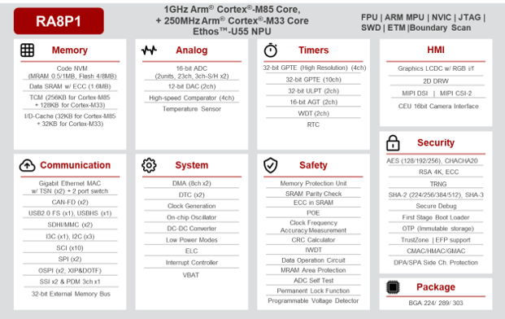
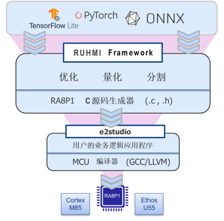

Renesas RA8P1 AI 应用开发指南
RA8P1 系列是瑞萨电子首款搭载高性能 Arm® Cortex®-M85 (CM85) 及 Helium™ 矢量扩展，并集成 Ethos™-U55 NPU 的 32 位 AI 加速微控制器 (MCU)。 该系列通过单芯片实现 256 GOPS 的 AI 性能、超过 7300 CoreMarks 的突破性 CPU 性能和先进的人工智能 (AI) 功能，可支持语音、视觉和实时分析 AI 场景。 RA8P1 MCU 采用先进的 22nm ULL 工艺制造，有单核和双核两种配置方案，其中双核 MCU 集成 Cortex-M33 内核。
特性
- 1GHz Arm Cortex-M85 和 250MHz Cortex-M33 内核 Ethos-U55 NPU，500MHz 下算力达 256GOPS
- 0.5/1MB MRAM，可选 4/8MB 闪存
- 2MB SRAM，包括 TCM 和 64KB 缓存
- 支持视觉 AI 的并行接口和 MIPI-CSI2 摄像头接口 (I/F)
- 支持语音 AI 的 I2S 和 PDM 接口
- 带并行 RGB 和 MIPI-DSI 接口的 GLCDC
- 2D 绘图引擎
- 兼容 xSPI 的 Octal SPI，支持 XIP 与 DOTF
- 瑞萨电子安全 IP、TrustZone、防篡改保护功能
- 安全启动，配备用于第一级引导加载程序的不可变存储
- 32/16 位高分辨率定时器、32 位超低功耗定时器
- 16 位 ADC、12 位 DAC、HS 比较器
- 千兆以太网、TSN 交换机、USB2.0 HS/FS、CAN-FD
- SDHI、SPI、I3C、I2C 串行接口
- 32/16 位外部存储器接口 (CS/SDRAM)
RA8P1框图

本指南面向使用 Renesas RA8P1 开发端侧 AI 应用的工程师，从平台概览和 MNIST 快速入门开始，依次覆盖 TFLite/ONNX 模型转换与量化、平台配置、Ethos-U55 NPU 部署、Ethos-U55 NPU算子支持，自定义算子实现，验证优化和应用集成。
开发生态与工具资源
-
Renesas RUHMI
Renesas 提供RUHMI https://github.com/renesas/ruhmi-framework-mcu 协助用户开发RA8P1。该工具可将 AI 推理结果便捷地集成到图形界面及实际应用中，并集成模型量化、优化和部署能力，同时支持图形界面（GUI）和命令行（CLI）两种使用方式。 针对RHUMI的使用和相关文档，不在此讨论，读者请访问本节开头提到的RUHMI网址去了解更多。 RUHMI 底层整合了Arm Ethos-U Vela编译器实现模型转换，并持续扩展对更多模型和算子的支持。如果遇到RUHMI不支持的算子，建议使用Arm Ethos-U Vela编译器开发。

模型资源
RUHMI Model Zoo https://github.com/renesas/ruhmi-model-zoo 提供可用于模型评测的资源，模型信息如下：
- 图像分类（Image Classification）
| Model | Dataset | Input Shape | Classes | README |
|---|---|---|---|---|
| MobileNetV1 (0.25x) | ImageNet | (1, 224, 224, 3) | 1000 | mobilenetv1/README.md |
| MobileNetV2 (1.0x) | ImageNet | (1, 224, 224, 3) | 1000 | mobilenetv2/README.md |
| MobileNetV3-Small | ImageNet | (1, 192, 192, 3) | 1000 | (mobilenetv3/README.md |
| ShuffleNetV2 (x0.5) | ImageNet | (1, 224, 224, 3) | 1000 | shufflenetv2/README.md |
| SqueezeNet 1.1 | ImageNet | (1, 224, 224, 3) | 1000 | squeezenet_1_1/README.md |
| ResNet8 | CIFAR-10 | (1, 32, 32, 3) | 10 | resnet8/README.md |
| Visual Wake Words | COCO VWW | (1, 96, 96, 3) | 2 | visualwakeword/README.md |
- 目标检测（Object Detection）
| Model | Dataset | Input Shape | Classes | README |
|---|---|---|---|---|
| YOLO-Fastest 1.1 | COCO 2017 | (1, 320, 320, 3) | 80 | yolo_fastest_1_1/README.md |
| YOLOX-Tiny | COCO 2017 | (1, 224, 224, 3) | 80 | yolox_tiny/README.md |
- 人脸检测（Face Detection）
| Model | Dataset | Input Shape | Anchors | Classes | README |
|---|---|---|---|---|---|
| BlazeFace Front | WIDER FACE | (1, 128, 128, 3) | 896 | PINTO model zoo (Google MediaPipe) | blazeface/README.md |
- 音频分类（Audio Classification）
| Model | Dataset | Input Shape | Classes | README |
|---|---|---|---|---|
| Keyword Spotting (DS-CNN) | Google Speech Commands v0.02 | (1, 49, 10, 1) | 12 | key_word_spotting/README.md |
- 异常检测（Anomaly Detection)
| Model | Dataset | Input Shape | Metric | README |
|---|---|---|---|---|
| AD Dense Autoencoder (ad01) | DCASE 2020 Task 2 — ToyCar | (1, 640) | AUC / pAUC | auto_encoder/README.md |
-
使用 Arm Ethos-U Vela编译器开发
Arm针对Ethos U系列NPU提供了原生态的Arm Ethos-U 工具链，其相关信息可以访问Ethos-U 项目页面https://gitlab.arm.com/artificial-intelligence/ethos-u 提供 NPU 相关文档和软件。常用资源包括：
| 内容/项目 | 主要作用 | 与 RA8P1 AI 开发的关系 |
|---|---|---|
| Ethos-U 项目首页 | Arm Ethos-U 系列 NPU 开源项目的统一入口，用于浏览相关代码仓库、项目说明和更新记录 | 用于查找 Ethos-U55 相关的官方开源软件资源 |
| Vela 离线模型编译器 | 对量化后的 TFLite 模型进行分析、编译、优化和内存规划，生成适合 Ethos-U NPU 部署的优化模型 | RA8P1 模型部署流程中的离线模型编译工具 |
| Ethos-U Core Driver | 提供面向 Ethos-U NPU 的底层驱动接口，包括 NPU 初始化、命令流执行、中断和错误处理等功能 | RA8P1 设备侧调用 Ethos-U55 NPU时涉及的底层软件组件 |
| Ethos-U Core Platform | 提供面向嵌入式或裸机环境的参考平台、示例应用及平台适配代码 | 可用于理解 Ethos-U 裸机部署架构，但具体配置需要以 RA8P1 软件包为准 |
| Ethos-U Core Software | 集成或组织 Ethos-U 核心软件组件、构建配置及示例，便于进行完整的软件栈构建和验证 | 可用于了解 Vela、驱动、运行时和参考平台之间的关系 |
| 构建与配置文件 | 提供部分项目的编译脚本、依赖配置、平台配置和构建说明 | 有助于理解 Ethos-U 软件组件的构建方法和版本依赖 |
| 项目文档 | 包含安装方法、编译方法、接口说明、支持范围及使用限制 | 可作为 Vela 和 Ethos-U 软件栈的官方技术参考 |
| Issue、提交和版本信息 | 用于查看问题记录、代码变更、版本标签和发布历史 | 可用于排查工具问题，并确认 Vela、驱动和运行时组件的版本兼容性 |
下面将使用 Arm Ethos-U Vela 编译器完成模型编译，并将模型部署到 RA8P1，开启 AI 应用开发之旅。
开始前准备
建议从左侧导航栏的 “1. RA8P1 AI 概述” 开始，按章节顺序阅读本指南。
如需了解 RA8P1 的产品特性、硬件资源及相关资料，请访问：
准备好后，让我们开始吧！:)